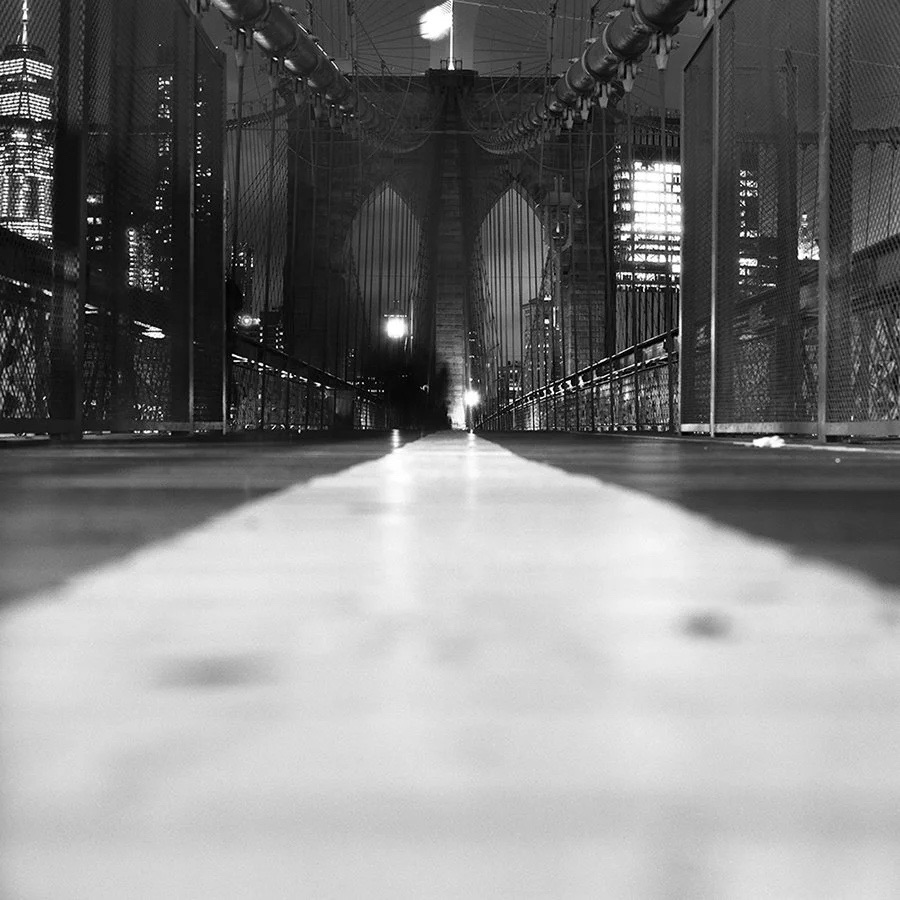

2026 胶片到底涨了没？我把每卷的涨跌拆开算了一遍
打开任何一个胶片群，你都会看到同一句话：「今年又涨价了。」 但我把公开报告和行情一条条翻完之后，发现真实情况比这句话有意思得多：均价其实只涨了约 2.5%，而有一卷还降了 30%。
这篇不喊口号，只做一件事：把每卷的涨跌拆开算一遍，然后告诉你——今年到底该买什么、别买什么。
一、先泼一盆冷水：「涨 20%–50%」这个说法，站不住
网上流传最广的说法是「2026 年柯达、富士、伊尔福普遍涨 20%–50%」。我顺着找了一圈，发现这句话的源头是一条视频，找不到对应的官方通告。
而能查到原始数据的两份来源，给的是完全不同的数字：
「均价 2.5%」和「个别卷涨 39%」并不矛盾 —— 这也是今年最容易被带偏的地方：涨的不是「胶片」，是「某几卷」。 平均数看着温和，但你恰好爱拍的那卷，可能正好是涨得最凶的。
二、涨得最狠的：富士彩负，一年涨超 60%
如果只看一个数字，那就是这个：富士 C200 过去一年涨幅超过 60%，从曾经的约 40 元/卷，涨到如今普遍 62–69.8 元——国内电商现货价可以看到 62.80 元（什么值得买的分析）。
对新手来说，这不是「贵了一点」，而是试错成本直接翻倍：一卷拍废，等于白丢一顿饭钱。所以如果你问我「新手第一卷还推荐 C200 吗」，我的回答是：它依然好拍，但已经不再是「便宜到不用想」的那一卷了。
三、黑白也没能幸免，但幅度温和得多
但注意一个反直觉的事实：黑白卷整体的涨幅，远小于彩负。 原因不复杂——彩负的工序更多、对化工原料更敏感，而且这几年需求涨得最猛的就是彩色。 所以「黑白更便宜」这句老话，今年不但成立，差距还拉大了。
四、今年确实有两卷变便宜了（其中一卷降了 30%）
这是全篇最实用的部分。
Tri-X 400：2024 年 1 月，Kodak Alaris 宣布对 135 规格的 Tri-X 400 降价最多 30%（Kosmo Foto、PetaPixel），到现在这个价格仍在生效。所以你会看到一个很魔幻的现象：那卷被叫做「最经典的万能卷」的胶卷，反而是今天少见的、比几年前更便宜的卷（Pellica 行情表也把它列为少数降价品）。
Delta 3200：按 PetaPixel 那份 7 月报告，降了 3.5%。
结论很反直觉：贵不贵跟「经典不经典」没关系，只跟「哪家厂今年调了价」有关系。 所以别再凭印象买卷了——今年该问的问题不是「哪卷好」，而是「哪卷最近没涨」。

五、为什么会涨？三个真实原因
六、国产彩卷不是安慰奖，它现在就是最便宜的正经选择
往年写「涨价」，末段只能给一句「省着点拍」。今年不一样了——有一卷是真的能替你省钱的。
算一笔账：一卷 Portra 400 在国内大约 ¥120–145，海外行情约 $17.85/卷（五卷装折算，Pellica）——一卷 Portra 的钱，够买两卷 C400 还有富余。 至于「国产卷到底能不能当口粮」，我在另一篇里会拆开细说，这里先给你一个判断：能拍，而且性价比是真的。
七、所以今年到底该怎么办？三句话
今年涨的不是胶片，是「你恰好中意的那一卷」。
顺带一条好消息
柯达的财报已经连续四个季度改善：2026 财年第二季度营收 3.11 亿美元、同比增加 4800 万（PetaPixel）。
我知道这跟你的钱包没直接关系，但它是「胶片这条线还在」的证据——一家准备收摊的公司，不会去改包装、不会去推新名字。胶片没死，它只是涨了点价、换了个人卖。
数据来源
价格与涨幅参考公开报道与电商现货（PetaPixel 2026-07 价格报告、Kodak Alaris 调价清单、Pellica 2026 行情表、国内电商现货价）。所有价格均随市场与城市波动，且各家渠道不同，本文只作参考，不构成购买建议。
评论区聊聊
你那卷今年涨了多少？留言报个卷名 + 城市 + 价格，让后面的人心里有个底——也让我把这篇文章的行情表做得更准。
这几卷今年没怎么涨（或降过价）
Tri-X 400（降过价的经典） Fomapan 100 Classic（低价口粮） T-Max 100（细腻派） CHM 400（平民版 HP5）
去胶卷库看看这几卷
「胶卷档案」是一个可搜索的胶卷资料库：每卷都有规格、特性、使用感受、参考价与实拍样片。搜品牌或型号就能直达。